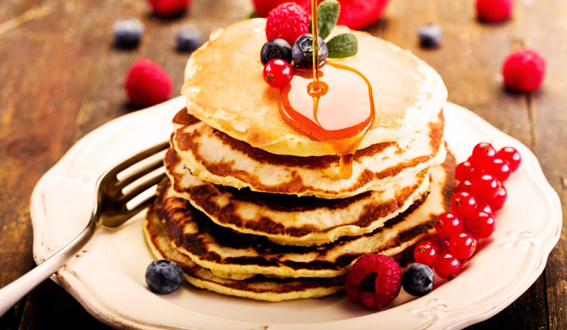

Paquecas
No Brasil, estamos acostumados com a panqueca recheada, salgada, servida no almoço ou no jantar. A diferença entre esses tipos está na massa: a panqueca americana é bem mais fofinha e servida com mel, geleia e outros ingredientes que a deixam ainda melhor. Ela é ideal para começar o dia de forma deliciosa. E seguindo algumas dicas simples, sua panqueca doce ficará perfeita.
A verdadeira panqueca americana é feita com buttermilk, um resíduo líquido que é formado através da fabricação da manteiga, e tem sabor bastante ácido. Ele ajuda a deixar a massa da panqueca superfofinha, mas ainda não é vendido no Brasil. Então, como fazer panqueca doce sem esse ingrediente? No Brasil, nós temos a coalhada para substituí-lo na receita de panqueca doce! A tradicional é feita com leite integral e suco de limão (ou vinagre), mas as que são vendidas no supermercado também servem! Portanto, na hora de preparar a sua panqueca, troque a quantidade de leite por coalhada ou misture utilize metade leite, metade coalhada.
Outra dica de ouro é: não use o liquidificador! A massa de panqueca não precisa ser batida demais, porque isso acaba deixando-a pesada. Por isso, utilize um batedor de arame para juntar os ovos e o açúcar. Quando for acrescentar os secos, bata levemente com um garfo apenas para incorporá-los à massa. Fique atento para não bater demais!
E por último, a forma de garantir o máximo de fofura na sua panqueca americana é utilizar metade de farinha de trigo e metade de amido de milho. O amido de milho é um pouco mais leve e, por isso, impede que a farinha deixe a massa muito pesada. Além disso, é importante usar produtos de boa qualidade!
Para dar um toque diferente a suas receitas, que tal você adicionar ou trocar alguns ingredientes? Experimente acrescentar cenoura ralada, salsinha, beterraba ou cebolinha. Isso emprestará novas cores e sabores para sua panqueca doce.
Texto retirado do site Tudo Gostoso